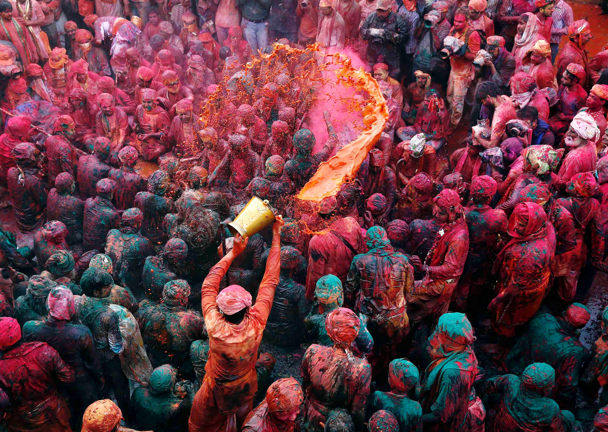
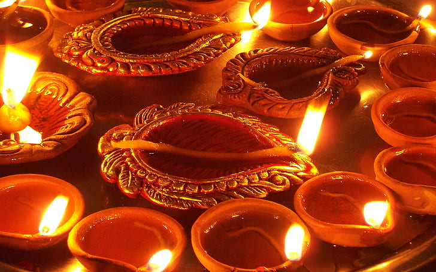
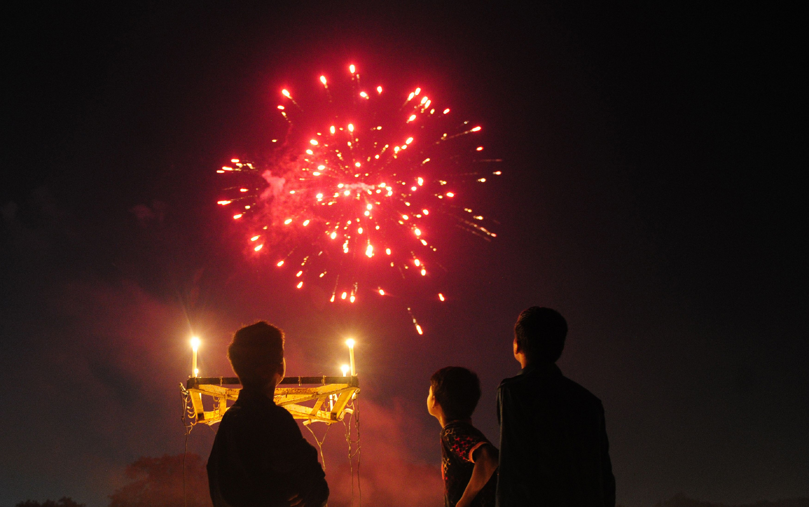
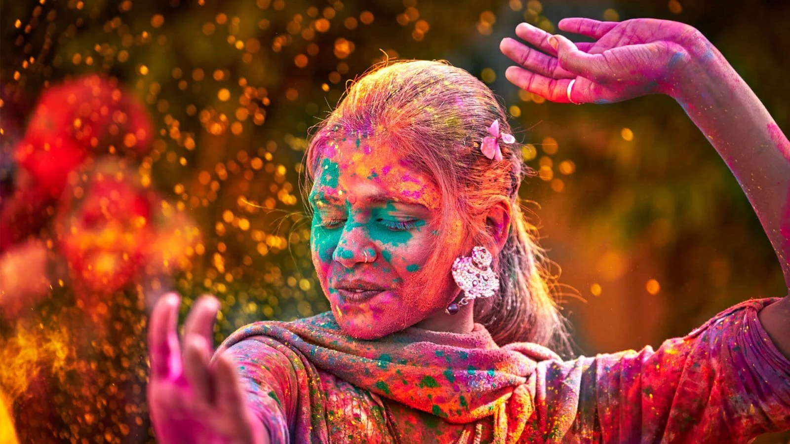

About Festivals-A festival is an event ordinarily celebrated by a community and centering on some characteristic aspect of that community and its religion or cultures. It is often marked as a local or national holiday, mela, or eid. A festival constitutes typical cases of glocalization, as well as the high culture-low culture interrelationship.[1] Next to religion and folklore, a significant origin is agricultural. Food is such a vital resource that many festivals are associated with harvest time. Religious commemoration and thanksgiving for good harvests are blended in events that take place in autumn, such as Halloween in the northern hemisphere and Easter in the southern.  Festivals often serve to fulfill specific communal purposes, especially in regard to commemoration or thanking to the gods, goddesses or saints: they're called patronal festivals. They may also provide entertainment, which was particularly important to local communities before the advent of mass-produced entertainment. Festivals that focus on cultural or ethnic topics also seek to inform community members of their traditions; the involvement of elders sharing stories and experience provides a means for unity among families. Etymology A Festival at Antwerp, Belgium, 17th century Country Festival in Swabia  The word "festival" was originally used as an adjective from the late fourteenth century, deriving from Latin via Old French.[5] In Middle English, a "festival dai" was a religious holiday.[6] Its first recorded used as a noun was in 1589 (as "Festifall").[5] Feast first came into usage as a noun circa 1200,[7] and its first recorded use as a verb was circa 1300.[8] The term "feast" is also used in common secular parlance as a synonym for any large or elaborate meal. When used as in the meaning of a festival, most often refers to a religious festival rather than a film or art festival. In the Philippines and many other former Spanish colonies, the Spanish word fiesta is used to denote a communal religious feast to honor a patron saint.[citation needed]
 Many festivals have religious origins and entwine cultural and religious significance in traditional activities. The most important religious festivals such as Christmas, Rosh Hashanah, Diwali, Eid al-Fitr and Eid al-Adha serve to mark out the year. Others, such as harvest festivals, celebrate seasonal change. Events of historical significance, such as important military victories or other nation-building events also provide the impetus for a festival. An early example is the festival established by Ancient Egyptian Pharaoh Ramesses III celebrating his victory over the Libyans.[19] In many countries, royal holidays commemorate dynastic events just as agricultural holidays are about harvests. Festivals are often commemorated annually.  There are numerous types of festivals in the world and most countries celebrate important events or traditions with traditional cultural events and activities. Most culminate in the consumption of specially prepared food (showing the connection to "feasting") and they bring people together. Festivals are also strongly associated with national holidays. Lists of national festivals are published to make participation easier.[20]